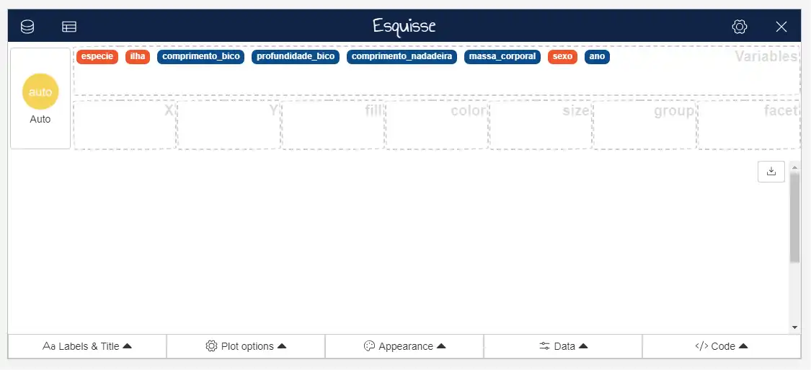
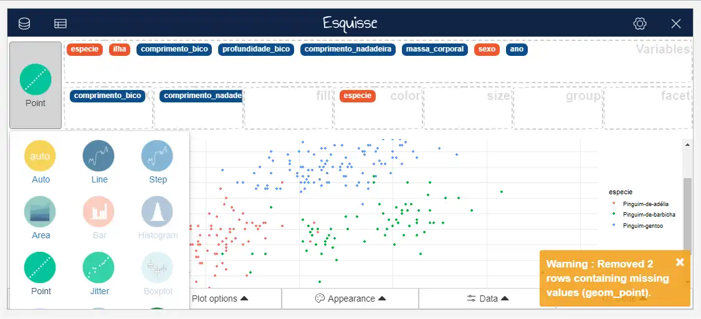
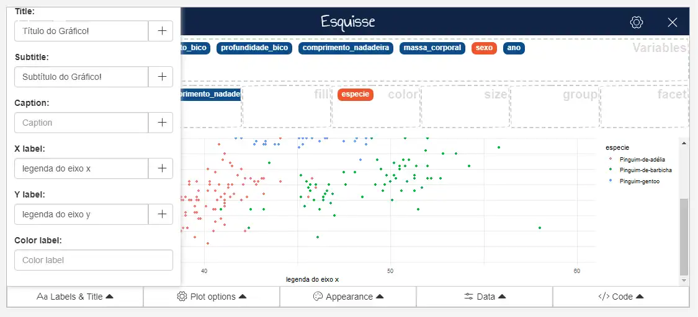
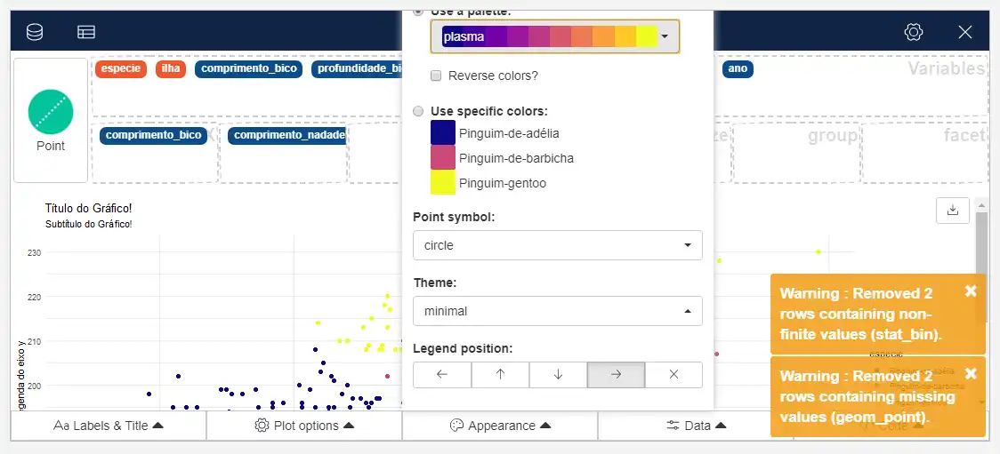
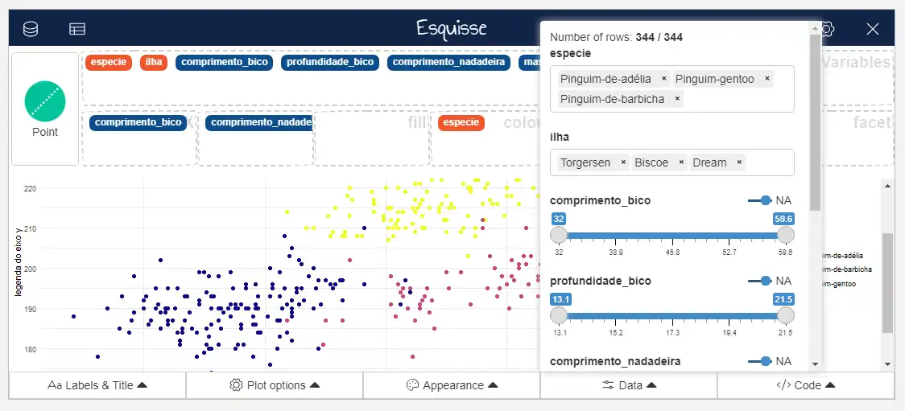
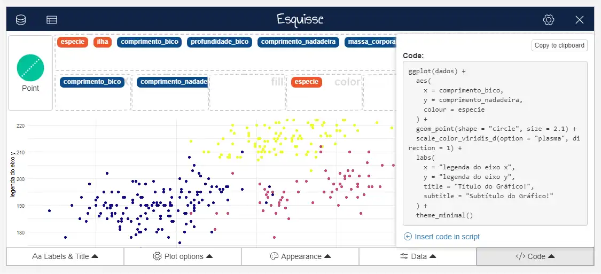
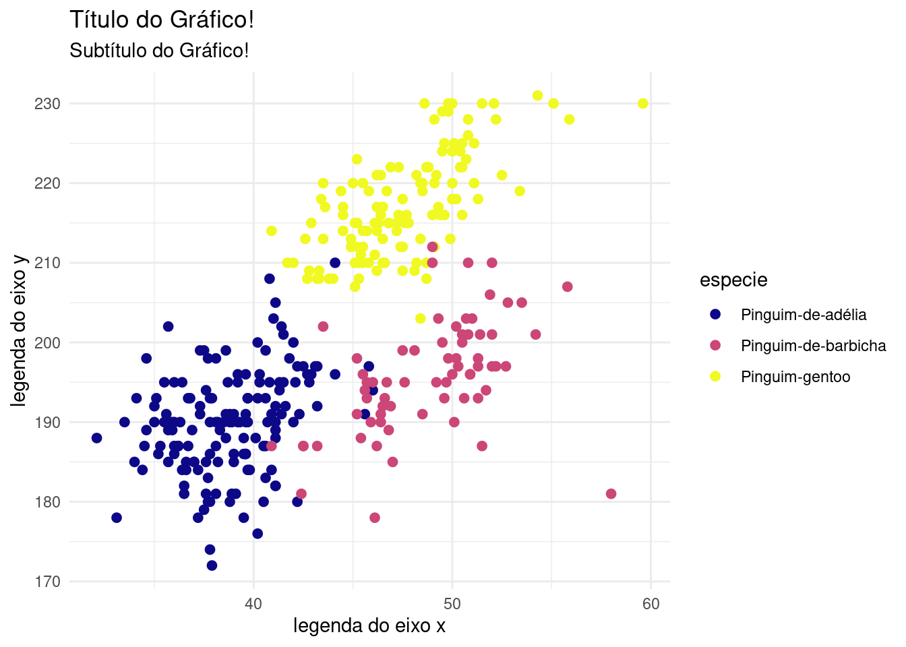

install.packages("esquisse")Você já conhece o esquisse?
O esquisse é um pacote que permite a criação de gráficos em {ggplot2} de maneira point and click, o que torna a construção de gráficos uma tarefa bem mais simples, pois não há necessidade de digitar as linhas de código!
Além disso, é possível recuperar o código que gerou os gráficos, o que é ótimo para garantir a reprodutibilidade dos resultados!
Legal, né?
Aqui vai um breve tutorial de como usar essa ferramenta:
- Instale o pacote {esquisse}:
- Carregue o pacote
library(esquisse)- Carregue os seus dados. No nosso caso, estamos usando a base de dados pinguins, do pacote {dados}
(Para instalar esse pacote, basta rodar o comando install.packages("dados"))
dados <- dados::pinguins- Execute o seguinte comando:
dados |> esquisser()E então, uma página como essa será aberta:

É nessa interface/página que criaremos o nosso gráfico!
- Crie e edite o gráfico na maneira que desejar!
Na imagem abaixo, podemos ver os botões para escolher o tipo de gráfico, e quais variáveis estarão mapeadas em cada atributo estético.

Na aba “Labels & Title” você pode editar os títulos e legendas:

Na aba “Appearance” você pode mudar as cores e aparência do gráfico, de maneira geral:

Além disso, na aba “Data” é possível filtrar algumas variáveis da base de dados, e isso é feito com a função filter do {dplyr}:

E enfim, na aba “Code” você pode recuperar o código que gera o gráfico, para colocá-lo em sua análise de dados, por exemplo!

Ao copiar o código gerado e executar no R, o seguinte gráfico é gerado:
library(ggplot2)
ggplot(dados) +
aes(x = comprimento_bico, y = comprimento_nadadeira, colour = especie) +
geom_point(shape = "circle",
size = 2.1) +
scale_color_viridis_d(option = "plasma", direction = 1) +
labs(x = "legenda do eixo x",
y = "legenda do eixo y", title = "Título do Gráfico!", subtitle = "Subtítulo do Gráfico!") +
theme_minimal()Warning: Removed 2 rows containing missing values (`geom_point()`).